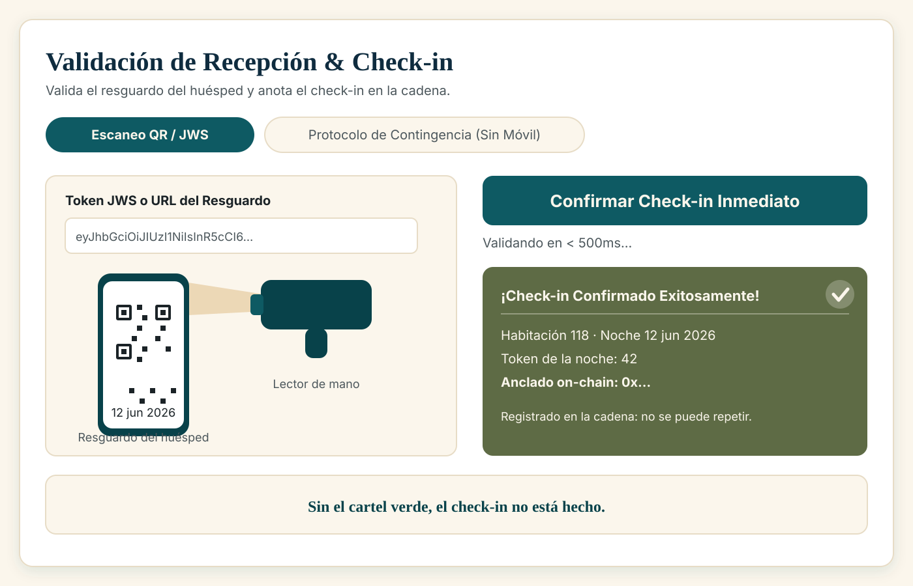

1. Cómo entrar
La pantalla de recepción está en la dirección del hotel seguida de /recepcion.
Se entra con tres cosas (doble factor: algo que sabes y algo que tienes):
- Tu usuario y tu contraseña de recepción (son tuyos; no los compartas).
- Un código de 6 dígitos de la aplicación de autenticación del móvil del puesto de trabajo.
- La cartera del hotel conectada en la barra superior. La pantalla lo pide al principio: pulsa Conectar wallet y acepta en el puesto.
Pasos:
- Abre
/recepcion. - Escribe usuario y contraseña. Pulsa Continuar.
- Escribe el código de 6 dígitos y pulsa Entrar.
- Comprueba arriba a la derecha que aparece tu sesión (usuario) y la cartera conectada.
Si la pantalla dice «Tu sesión ha caducado. Vuelve a iniciar sesión.», es la protección normal: la sesión dura 15 minutos. Vuelve a entrar (usuario, contraseña y código). No hay nada roto.

2. Qué se ve al abrir la pantalla
Arriba, el título «Validación de Recepción & Check-in» y una frase que resume para qué sirve: validar los resguardos de los huéspedes o usar el protocolo de contingencia cuando no tienen móvil.
Debajo hay dos pestañas:
| Pestaña | Cuándo se usa |
|---|---|
| Escaneo QR / JWS | El camino normal: el huésped te enseña el código QR de su resguardo. |
| Protocolo de Contingencia (Sin Móvil) | El huésped no puede mostrar el QR: se le ha muerto el móvil, no lo trae, o el aparato falla. |
Y dos avisos que pueden aparecer:
- Banner verde de éxito («¡Check-in Confirmado Exitosamente!»): el check-in se ha registrado. Muestra la habitación, la fecha, el número de la noche, cuántos milisegundos ha tardado y el código de la operación que quedó anotada en la cadena. Ese código es la prueba de que el check-in existe de verdad y no solo en la pantalla.
- Banner en pausa: si el hotel ha pausado el sistema, aparece un aviso que dice que no se puede registrar ningún check-in hasta que se reanude, y te pide que avises a administración. En ese caso el botón de confirmar queda desactivado a propósito (mejor eso que dejarte pulsar y que la operación falle).

3. Escanear un resguardo, paso a paso
Antes de empezar
El resguardo del huésped es un código QR (o su versión impresa en papel, un código que empieza por MDS-). Cada resguardo sirve una sola vez: al confirmarlo queda gastado.
El procedimiento
- Pide al huésped el resguardo (móvil o papel).
- Comprueba que la pestaña activa es Escaneo QR / JWS.
- Lee el código QR con el lector de mano. El texto del resguardo aparece en la caja «Token JWS o URL del Resguardo». Si el lector no lo pega solo, puedes pegar ahí el texto completo que te muestre el huésped.
- Pulsa Confirmar Check-in Inmediato.
- Espera un instante. La pantalla pone «Validando en < 500ms…» y normalmente tarda mucho menos (en las pruebas, unos 40 milisegundos).
- Mira el resultado antes de dar la llave:
- Si sale el banner verde, el check-in está hecho: verás la habitación, la fecha y, si todo ha ido bien, la línea «Anclado on-chain: 0x…». Anotado en la cadena significa que la noche queda marcada como usada de forma definitiva.
- Si sale un mensaje de error, no hay check-in: mira la tabla del apartado 4 y sigue lo que dice. El error se queda en pantalla hasta que hagas la siguiente operación.
- Si el banner verde no muestra la línea del ancla y en su lugar dice «Sin ancla on-chain», no des el check-in por bueno: avisa a administración y repite la operación.
Lo que nunca debes hacer en esta pantalla
- No escanees dos veces el mismo resguardo para "asegurarte". La segunda vez dará error. Eso no es un fallo: es la garantía de que una noche no se usa dos veces.
- No inventes ni teclees un resguardo a mano si no lo tienes delante.
- No apuntes datos personales en ningún campo de la pantalla (ver apartado 5).

4. Qué significa cada mensaje
Estos son los mensajes que puede devolver el sistema, explicados en lenguaje llano.
| Mensaje en pantalla | Qué ha pasado | Qué hacer |
|---|---|---|
| «Este resguardo ya se utilizó para un check-in; cada pase sirve una sola vez» | Ese resguardo ya se usó. El sistema lo tiene apuntado. | No es un error del sistema. Comprueba en el listado del hotel si esa noche ya tiene entrada hecha. Si el huésped insiste, avisa a administración: no se puede repetir. |
| «Otro puesto está procesando el check-in de esta noche; espera unos segundos y reinténtalo» | Otro puesto de recepción está haciendo el check-in de la misma noche en este mismo momento. | Espera unos segundos y repite la operación. El resguardo del huésped no se ha gastado. |
| «El contrato canónico está en pausa: el hotel ha detenido las operaciones y el check-in no puede registrarse on-chain hasta reanudarlo» | El hotel ha pausado el sistema de forma deliberada. No es una avería. | Avisa a administración. El resguardo del huésped sigue siendo válido para cuando se reanude. No lo tires. |
| «No se pudo comprobar la titularidad en la cadena; el check-in no se registra hasta poder verificarla» | La red no ha respondido a la consulta de quién es el dueño de la noche. | No es culpa del huésped. Espera un momento y reintenta. Si sigue igual, avisa a administración. |
| «El resguardo corresponde a un propietario anterior de la noche; el titular actual debe emitir uno nuevo» | El huésped enseña un resguardo antiguo: la noche se revendió después y ya no es suya. | Pide al titular actual su resguardo. Si el que está delante dice ser el comprador, que consulte con quien le vendió. |
| «La habitación X ya ha realizado el check-in (noche Y consumida)» | La noche ya está usada en el sistema. | Como en el primer caso: no se puede repetir. Avisa a administración si hay duda. |
| «La noche Y fue quemada por expiración» | Esa noche caducó sin venderse y el sistema la retiró a las 12:00. Por tanto lo que trae el huésped no es válido. | Avisa a administración antes de alojar. No es una noche vendida. |
| «La noche no tiene venta primaria registrada: solo puede hacerse check-in de noches vendidas» | Ese número de noche no se vendió nunca por el hotel. | Comprueba el resguardo con administración. |
| «No se pudo anclar el check-in on-chain: …» | El sistema no ha podido anotar el check-in en la cadena (problema de red o de la cartera del puesto). | No hay check-in. Reintenta pasados unos segundos. Si vuelve a fallar, avisa a administración. El resguardo no se ha gastado. |
| «Resguardo inválido o corrupto» o «El resguardo no identifica una noche válida» | El código leído no es un resguardo o se ha leído mal. | Vuelve a escanear con cuidado. Si el huésped lo tiene en el móvil, pídele que suba el brillo de la pantalla. |
| «La prueba debe ser un código de resguardo emitido por el hotel (MDS-XXXXXXXX)» | En contingencia has escrito algo que no tiene el formato del código del hotel. | Revisa el código: empieza por MDS- y sigue con letras y números en mayúsculas. |
| «No se admiten documentos de identidad: el registro de viajeros (RD 933/2021) se hace en el PMS del hotel, fuera de la plataforma» | Has escrito un DNI, un NIE o un pasaporte en el campo de la prueba. El sistema lo rechaza a propósito. | Escribe un código de resguardo, un hash o una dirección de cartera. El documento se anota donde siempre: en el PMS del hotel. |
| «Motivo de contingencia no admitido» | El motivo elegido no es uno de la lista. | Elige uno de la lista desplegable. No se escribe texto libre. |
| «No se encontró reserva para la habitación X en fecha Y» | No hay ninguna noche vendida con esa habitación y esa fecha. | Revisa la habitación y la fecha (formato año-mes-día). |
| «Cuenta bloqueada temporalmente por intentos fallidos. Reinténtalo en 15 minutos.» | Demasiados intentos de acceso fallidos. | Espera 15 minutos. Si no recuerdas la contraseña, pide que te la renueven. |
Regla de oro: si no ves el banner verde con la habitación y la fecha, el check-in no está hecho. No lo des por bueno de palabra.
5. Check-in cuando el cliente no tiene el QR (contingencia)
Se usa cuando el huésped no puede mostrar el QR. Está en la pestaña Protocolo de Contingencia (Sin Móvil). La contingencia cambia cómo se demuestra que la noche es suya; no cambia la garantía: el check-in se anota en la cadena exactamente igual.
Qué se admite como prueba
Pide una sola prueba de posesión, por este orden de preferencia:
- El código de resguardo impreso que emitió el hotel (empieza por
MDS-, mayúsculas). - El código de la operación de compra (el hash de la transacción, una cadena larga que empieza por
0x). - La dirección de la cartera del comprador (también empieza por
0x, y es más corta que el hash).
Pasos
- Abre la pestaña Protocolo de Contingencia (Sin Móvil).
- Rellena:
- Número de Habitación (por ejemplo 101).
- Fecha de Entrada (formato año-mes-día).
- Factor de Posesión a Verificar: elige cuál de las tres pruebas vas a usar.
- Valor de Prueba / Dato de Cotejo: escribe la prueba (el código
MDS-…, el hash o la dirección de la cartera). - Motivo de Contingencia: elige de la lista (huésped sin dispositivo, resguardo impreso, fallo técnico, u otro).
- Antes de confirmar, comprueba con el huésped que la habitación y la fecha son las suyas.
- Pulsa Validar y Autorizar Entrada.
- Mira el resultado igual que en el camino del QR: sin banner verde no hay check-in.
Ten en cuenta el sistema avisa de que, al confirmar, declaras haber registrado el parte de entrada de viajeros en el programa oficial del hotel. Es decir: la parte legal la sigues haciendo en el PMS, no aquí.
Lo que NUNCA se escribe en esta pantalla
- Nunca el nombre del huésped.
- Nunca su DNI, NIE o pasaporte.
- Nunca su teléfono, su correo ni su nacionalidad.
- Nunca un texto libre: ni "viene con su mujer", ni "es cliente habitual", ni nada parecido. El motivo es una lista cerrada y el sistema rechaza lo que no esté en ella.
Todo eso no entra en la web. Si necesitas dejar constancia, se anota donde siempre: en el registro de viajeros del hotel. La web no guarda DNI ni nombres.
6. Si el sistema no responde
Puede pasar: la red va lenta, el puesto se queda sin conexión o la cartera del hotel no puede firmar. Qué hacer, en orden:
- No hagas el check-in "de palabra". La plataforma no tiene un modo sin conexión: lo que no queda anotado en la cadena, no está registrado, y no aparece en ningún listado.
- Atiende al huésped mientras tanto. No le dejes esperando de pie: explícale que hay una incidencia técnica y que lo estás resolviendo. La parte del registro de viajeros se hace como siempre, en el PMS del hotel.
- Espera y reintenta pasados unos segundos: pulsa otra vez el botón. El resguardo del huésped no se gasta si el check-in no llega a registrarse, así que puedes reintentar con el mismo resguardo. Si te dice «ya se utilizó», entonces sí se registró antes: comprueba el listado antes de repetir.
- Avisa a administración con estos tres datos: habitación, fecha y lo que decía la pantalla.
- Si el sistema no vuelve en un rato, deja constancia en el parte de incidencias del hotel (en papel o en el PMS, donde el hotel lo tenga por costumbre): fecha, hora, habitación, nombre del huésped y el código
MDS-…si lo tiene. Ese parte es del hotel, no de la plataforma: la web no guarda nada de esto. - Cuando el sistema vuelva, haz el check-in normal y avisa a administración de que ya está hecho, para que no quede ninguna noche sin anotar.
Si la pantalla muestra el aviso de contrato en pausa, no es una avería: el hotel ha detenido las operaciones. Avisa a administración y guarda el resguardo del huésped para reintentarlo.
7. Recordatorio: qué hace la web y qué no
| La web sí hace | La web no hace |
|---|---|
| Validar el resguardo del huésped y anotar el check-in en la cadena | Pedir o guardar el nombre, el DNI, el teléfono o la nacionalidad |
Aceptar una prueba de posesión (código MDS-…, código de operación o dirección de cartera) | Enviar nada al registro oficial de viajeros ni generar una ficha policial |
| Registrar el motivo de la contingencia de una lista cerrada | Guardar texto libre donde se pueda escribir un DNI |
| Avisar al programa de gestión del hotel de que la estancia se ha validado (sin datos personales) | Guardar el contenido de la conversación con el huésped |
El registro de viajeros (RD 933/2021) es responsabilidad del establecimiento y se sigue haciendo en el mostrador, como hoy.
Manual de recepción · Hotel Marina del Sol · cualquier duda con un mensaje que no aparezca aquí: avisa a administración antes de improvisar.